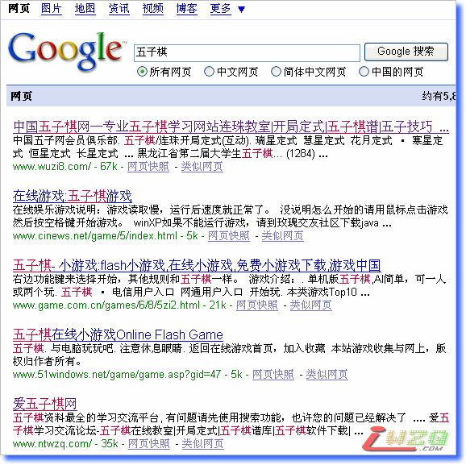
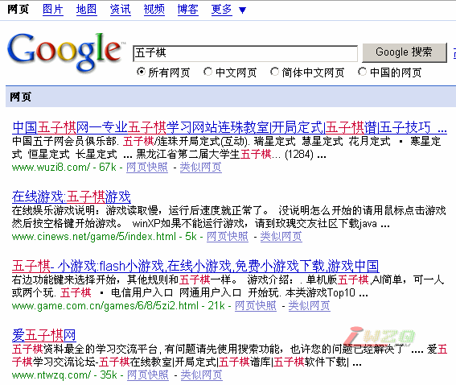
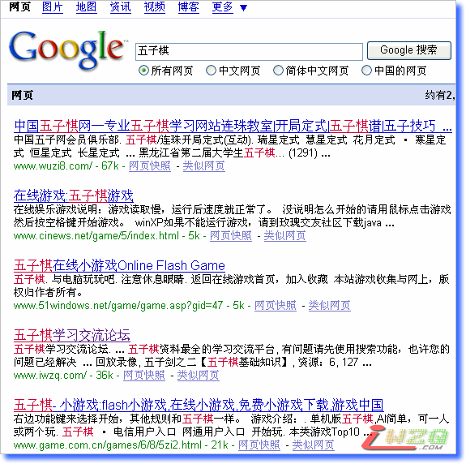
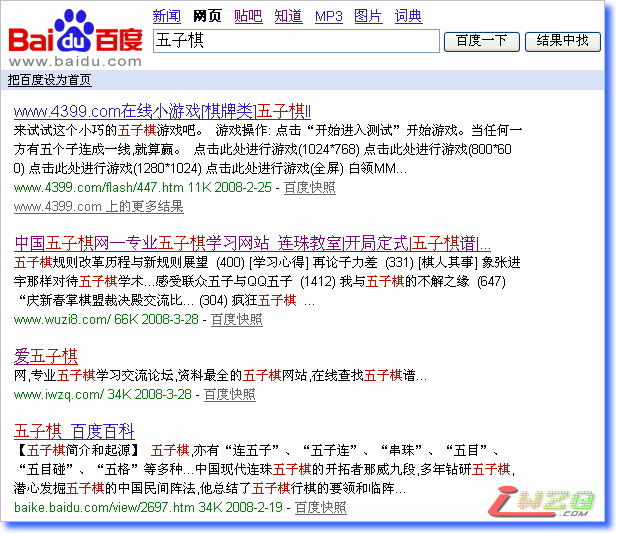
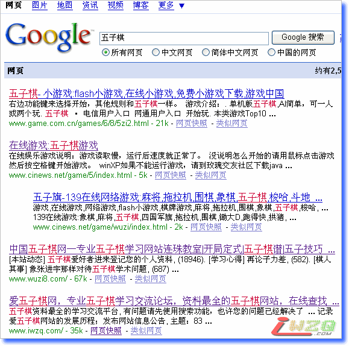

断奶行动已经开始
#1 断奶行动已经开始 作者：有志青年 发表时间：2008-3-14 13:38:23
本站彻底放弃www.ntwzq.com的域名，所谓不破不立！全力放在www.iwzq.com域名上
在放弃ntwzq的域名之后，本站一些图片或者附件会出现无法显示问题，其原因是早期的文件上传是绝对路径，请发现者在本贴后回复提出。在此感谢！
当前google收录了很多ntwzq的内容：约有 7,380 项符合 www.ntwzq.com 的查询结果，
而对iwzq域名下的收录就少了一些：约有 5,940 项符合 www.iwzq.com 的查询结果
当前baidu收录的ntwzq的内容：相关网页65篇，
当前baidu收录的iwzq的内容：相关网页约6,870篇
看来还是百度聪明。
因为google收录了众多的ntwzq域名下的内容，一旦放弃这个域名后，从google搜索引擎到本站的7千多条记录将瞬间变成死链接，所以这次行动就称为断奶行动把。
#2 Re:断奶行动已经开始 作者：有志青年 发表时间：2008-3-14 17:06:38
在取消ntwzq的域名之后，爱五子棋网的访问量锐减到10人，看来有很大一部分人是通过ntwzq的域名在访问本站。
现在做了技术处理，将通过ntwzq域名访问本站部分页面的朋友，引导到iwzq的域名上来了。
下一步要做的是，找出原有一些帖子的图片及附件错误，并作修改。
#3 Re:Re:断奶行动已经开始 作者：有志青年 发表时间：2008-3-14 18:00:18

ntwzq的域名已经排在第五位了。
不过，再见了！
#4 Re:断奶行动已经开始 作者：百医天使 发表时间：2008-3-14 20:00:29
人的成长是这样的，我想网站也是如此，不断奶，就不会长大，断奶是为了更好的成长
#5 Re:Re:断奶行动已经开始 作者：有志青年 发表时间：2008-3-16 22:09:45
郁闷呀，放弃了ntwzq域名，今天发现竟然在google排名第四了，看来还在上升中呢

#6 Re:断奶行动已经开始 作者：逆刃 发表时间：2008-3-16 22:32:03
google真的很笨哦。。。
#7 Re:断奶行动已经开始 作者：逆刃 发表时间：2008-3-16 22:36:26
不过百度更笨，谷歌都知道排前面，百度却没反应，难道百度只会竞价排名？
#8 Re:断奶行动已经开始 作者：有志青年 发表时间：2008-3-17 16:45:57
google还算聪明，已经调整过来了。
#9 Re:断奶行动已经开始 作者：黄药师 发表时间：2008-3-17 18:10:55
工作量挺大的！
#10 google比百度聪明 作者：有志青年 发表时间：2008-3-19 13:34:21

google已经收录了iwzq网址，并且排名第四了。
在百度上，爱五子棋依然排在第二页，且还是ntwzq的域名，可笑的是竟然是18日的内容，18日早就没有ntwzq的访问了。哈哈
#11 Re:断奶行动已经开始 作者：无天 发表时间：2008-3-27 15:54:10
狗狗确实很笨，百度确实很势利。#12 这是否说明断奶成功？ 作者：有志青年 发表时间：2008-3-30 8:44:34


iwzq爱五子棋在百度和google通过“五子棋”这个关键词的搜索均进入了前五。
这个结果，在我看来是断奶成功了，下一步爱五子棋网将进一步做好五子棋相关内容的搜集整理，免费服务于更多五子棋爱好者。
当然这其中少不了每个五子棋爱好者的支持和五子棋高手的参与。
但！本站依然坚持“谢绝灌水！”努力营造“静心学棋”的氛围，希望广大爱好者，少发或者不发无实质内容的回复。